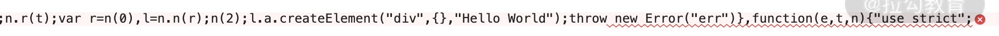
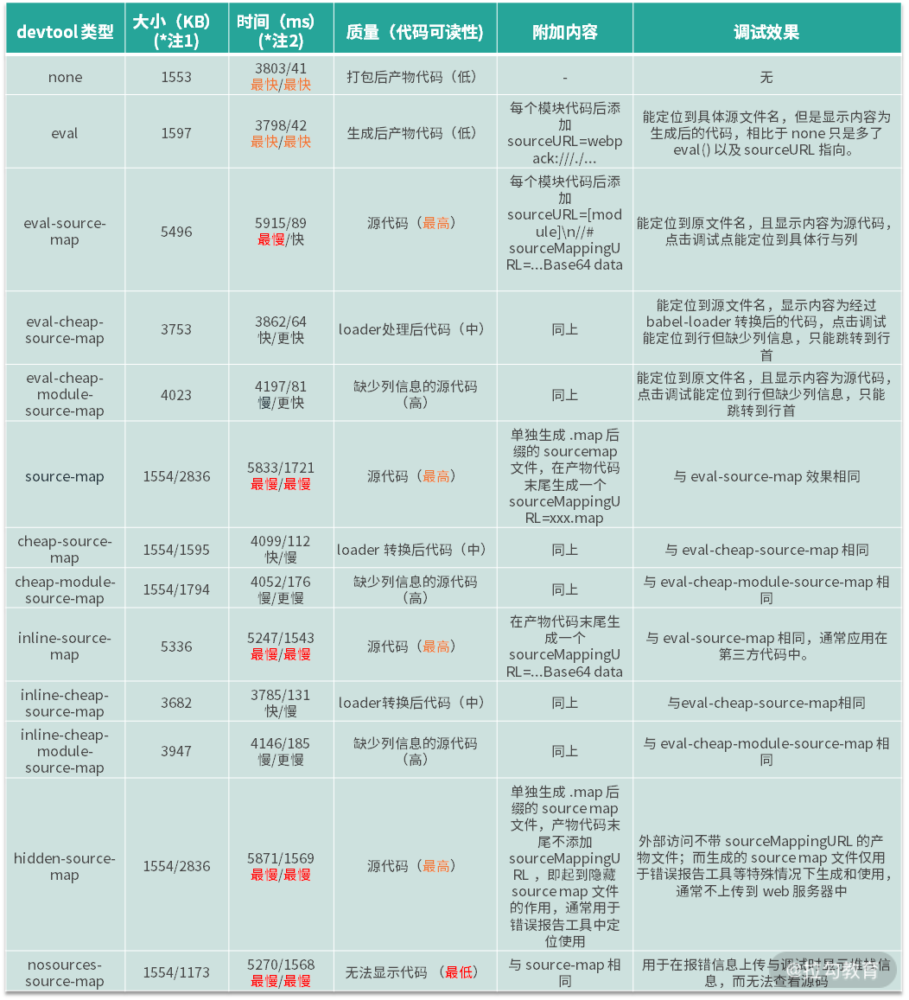
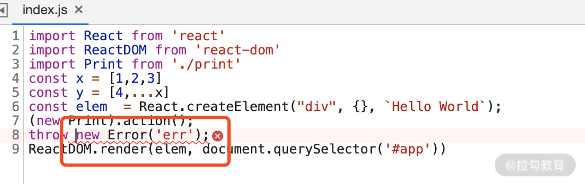
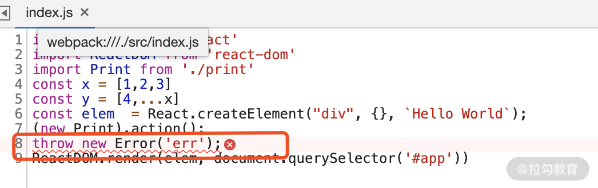
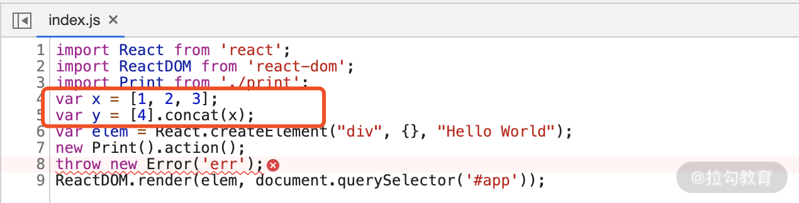
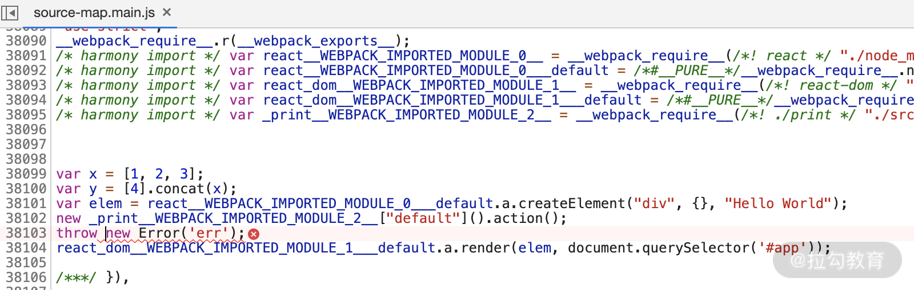
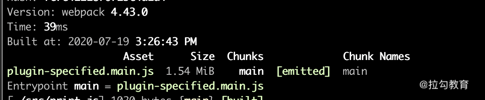

- 00 开篇词 建立上帝视角，全面系统掌握前端效率工程化.md.html
- 01 项目基石：前端脚手架工具探秘.md.html
- 02 界面调试：热更新技术如何开着飞机修引擎？.md.html
- 03 构建提速：如何正确使用 SourceMap？.md.html
- 04 接口调试：Mock 工具如何快速进行接口调试？.md.html
- 05 编码效率：如何提高编写代码的效率？.md.html
- 06 团队工具：如何利用云开发提升团队开发效率？.md.html
- 07 低代码工具：如何用更少的代码实现更灵活的需求.md.html
- 08 无代码工具：如何做到不写代码就能高效交付？.md.html
- 09 构建总览：前端构建工具的演进.md.html
- 10 流程分解：Webpack 的完整构建流程.md.html
- 11 编译提效：如何为 Webpack 编译阶段提速？.md.html
- 12 打包提效：如何为 Webpack 打包阶段提速？.md.html
- 13 缓存优化：那些基于缓存的优化方案.md.html
- 14 增量构建：Webpack 中的增量构建.md.html
- 15 版本特性：Webpack 5 中的优化细节.md.html
- 16 无包构建：盘点那些 No-bundle 的构建方案.md.html
- 17 部署初探：为什么一般不在开发环境下部署代码？.md.html
- 18 工具盘点：掌握那些流行的代码部署工具.md.html
- 19 安装提效：部署流程中的依赖安装效率优化.md.html
- 20 流程优化：部署流程中的构建流程策略优化.md.html
- 21 容器方案：从构建到部署，容器化方案的优势有哪些？.md.html
- 22 案例分析：搭建基本的前端高效部署系统.md.html
- 23 结束语 前端效率工程化的未来展望.md.html
03 构建提速：如何正确使用 SourceMap？
在上一课时中我们聊了开发时的热更新机制和其中的技术细节，热更新能帮助我们在开发时快速预览代码效果，免去了手动执行编译和刷新浏览器的操作。课后留的思考题是找一个实现了 HMR 的 Loader，查看其中用到哪些热替换的 API，希望通过这个题目能让你加深对相关知识点的印象。
那么除了热更新以外，项目的开发环境还有哪些在影响着我们的开发效率呢？在过去的工作中，公司同事就曾问过我一个问题：为什么我的项目在开发环境下每次构建还是很卡？每次保存完代码都要过 1~2 秒才能看到效果，这是怎么回事呢？其实这里面的原因主要是这位同事在开发时选择的 Source Map 设定不对。今天我们就来具体讨论下这个问题。首先，什么是 Source Map 呢？
什么是 Source Map
在前端开发过程中，通常我们编写的源代码会经过多重处理（编译、封装、压缩等），最后形成产物代码。于是在浏览器中调试产物代码时，我们往往会发现代码变得面目全非，例如：

因此，我们需要一种在调试时将产物代码显示回源代码的功能，source map 就是实现这一目标的工具。
source-map 的基本原理是，在编译处理的过程中，在生成产物代码的同时生成产物代码中被转换的部分与源代码中相应部分的映射关系表。有了这样一张完整的映射表，我们就可以通过 Chrome 控制台中的"Enable Javascript source map"来实现调试时的显示与定位源代码功能。
对于同一个源文件，根据不同的目标，可以生成不同效果的 source map。它们在构建速度、质量（反解代码与源代码的接近程度以及调试时行号列号等辅助信息的对应情况）、访问方式（在产物文件中或是单独生成 source map 文件）和文件大小等方面各不相同。在开发环境和生产环境下，我们对于 source map 功能的期望也有所不同：
- 在开发环境中，通常我们关注的是构建速度快，质量高，以便于提升开发效率，而不关注生成文件的大小和访问方式。
- 在生产环境中，通常我们更关注是否需要提供线上 source map , 生成的文件大小和访问方式是否会对页面性能造成影响等，其次才是质量和构建速度。
Webpack 中的 source map 预设
在 Webpack 中，通过设置 devtool 来选择 source map 的预设类型，文档中共有 20 余种 source map 的预设（注意：其中部分预设实际效果与其他预设相同，即页面表格中空白行条目）可供选择，这些预设通常包含了 "eval" "cheap" "module" "inline" "hidden" "nosource" "source-map" 等关键字的组合，这些关键字的具体逻辑如下：
webpack/lib/WebpackOptionsApply.js:232
if (options.devtool.includes("source-map")) {
const hidden = options.devtool.includes("hidden");
const inline = options.devtool.includes("inline");
const evalWrapped = options.devtool.includes("eval");
const cheap = options.devtool.includes("cheap");
const moduleMaps = options.devtool.includes("module");
const noSources = options.devtool.includes("nosources");
const Plugin = evalWrapped
? require("./EvalSourceMapDevToolPlugin")
: require("./SourceMapDevToolPlugin");
new Plugin({
filename: inline ? null : options.output.sourceMapFilename,
moduleFilenameTemplate: options.output.devtoolModuleFilenameTemplate,
fallbackModuleFilenameTemplate:
options.output.devtoolFallbackModuleFilenameTemplate,
append: hidden ? false : undefined,
module: moduleMaps ? true : cheap ? false : true,
columns: cheap ? false : true,
noSources: noSources,
namespace: options.output.devtoolNamespace
}).apply(compiler);
} else if (options.devtool.includes("eval")) {
const EvalDevToolModulePlugin = require("./EvalDevToolModulePlugin");
new EvalDevToolModulePlugin({
moduleFilenameTemplate: options.output.devtoolModuleFilenameTemplate,
namespace: options.output.devtoolNamespace
}).apply(compiler);
}
如上面的代码所示， devtool 的值匹配并非精确匹配，某个关键字只要包含在赋值中即可获得匹配，例如：'foo-eval-bar' 等同于 'eval'，'cheapfoo-source-map' 等同于 'cheap-source-map'。
Source Map 名称关键字
各字段的作用各不相同，为了便于记忆，我们在这里简单整理下这些关键字的作用：
- false：即不开启 source map 功能，其他不符合上述规则的赋值也等价于 false。
- eval：是指在编译器中使用 EvalDevToolModulePlugin 作为 source map 的处理插件。
- [xxx-...]source-map：根据 devtool 对应值中是否有 eval 关键字来决定使用 EvalSourceMapDevToolPlugin 或 SourceMapDevToolPlugin 作为 source map 的处理插件，其余关键字则决定传入到插件的相关字段赋值。
- inline：决定是否传入插件的 filename 参数，作用是决定单独生成 source map 文件还是在行内显示，该参数在 eval- 参数存在时无效。
- hidden：决定传入插件 append 的赋值，作用是判断是否添加 SourceMappingURL 的注释，该参数在 eval- 参数存在时无效。
- module：为 true 时传入插件的 module 为 true ，作用是为加载器（Loaders）生成 source map。
- cheap：这个关键字有两处作用。首先，当 module 为 false 时，它决定插件 module 参数的最终取值，最终取值与 cheap 相反。其次，它决定插件 columns 参数的取值，作用是决定生成的 source map 中是否包含列信息，在不包含列信息的情况下，调试时只能定位到指定代码所在的行而定位不到所在的列。
- nosource：nosource 决定了插件中 noSource 变量的取值，作用是决定生成的 source map 中是否包含源代码信息，不包含源码情况下只能显示调用堆栈信息。
Source Map 处理插件
从上面的规则中我们还可以看到，根据不同规则，实际上 Webpack 是从三种插件中选择其一作为 source map 的处理插件。
- EvalDevToolModulePlugin：模块代码后添加 sourceURL=webpack:///+ 模块引用路径，不生成 source map 内容，模块产物代码通过 eval() 封装。
- EvalSourceMapDevToolPlugin：生成 base64 格式的 source map 并附加在模块代码之后， source map 后添加 sourceURL=webpack:///+ 模块引用路径，不单独生成文件，模块产物代码通过 eval() 封装。
- SourceMapDevToolPlugin：生成单独的 .map 文件，模块产物代码不通过 eval 封装。
通过上面的代码分析，我们了解了不同参数在 Webpack 运行时起到的作用。那么这些不同参数组合下的各种预设对我们的 source map 生成又各自会产生什么样的效果呢？下面我们通过示例来看一下。
不同预设的示例结果对比
下面，以课程示例代码 03_develop_environment 为例，我们来对比下几种常用预设的差异（为了使时间差异更明显，示例中引入了几个大的类库文件）：

*注1：“/”前后分别表示产物 js 大小和对应 .map 大小。 *注2：“/”前后分别表示初次构建时间和开启 watch 模式下 rebuild 时间。对应统计的都是 development 模式下的笔者机器环境下几次构建时间的平均值，只作为相对快慢与量级的比较。
不同预设的效果总结
从上图的数据中我们不难发现，选择不同的 devtool 类型在以下几个方面会产生不同的效果。
- 质量：生成的 source map 的质量分为 5 个级别，对应的调试便捷性依次降低：源代码 > 缺少列信息的源代码 > loader 转换后的代码 > 生成后的产物代码 > 无法显示代码（具体参见下面的不同质量的源码示例小节）。对应对质量产生影响的预设关键字优先级为 souce-map = eval-source-map > cheap-module- > cheap- > eval = none > nosource-。
- 构建的速度：再次构建速度都要显著快于初次构建速度。不同环境下关注的速度也不同：
- 在开发环境下：一直开着 devServer，再次构建的速度对我们的效率影响远大于初次构建的速度。从结果中可以看到，eval- 对应的 EvalSourceMapDevToolPlugin 整体要快于不带 eval- 的 SourceMapDevToolPlugin。尤其在质量最佳的配置下，eval-source-map 的再次构建速度要远快于其他几种。而同样插件配置下，不同质量配置与构建速度成反比，但差异程度有限，更多是看具体项目的大小而定。
- 在生产环境下：通常不会开启再次构建，因此相比再次构建，初次构建的速度更值得关注，甚至对构建速度以外因素的考虑要优先于对构建速度的考虑，这一部分我们在之后的构建优化的课程里会再次讨论到。
- 包的大小和生成方式：在开发环境下我们并不需要关注这些因素，正如在开发环境下也通常不考虑使用分包等优化方式。我们需要关注速度和质量来保证我们的高效开发体验，而其他的部分则是在生产环境下需要考虑的问题。
不同质量的源码示例
- 源码且包含列信息

- 源码不包含列信息

- Loader转换后代码

- 生成后的产物代码

开发环境下 Source Map 推荐预设
在这里我们对开发环境下使用的推荐预设做一个总结（生产环境的预设我们将在之后的构建效率篇中再具体分析）：
- 通常来说，开发环境首选哪一种预设取决于 source map 对于我们的帮助程度。
- 如果对项目代码了如指掌，查看产物代码也可以无障碍地了解对应源代码的部分，那就可以关闭 devtool 或使用 eval 来获得最快构建速度。
- 反之如果在调试时，需要通过 source map 来快速定位到源代码，则优先考虑使用 eval-cheap-modulesource-map，它的质量与初次/再次构建速度都属于次优级，以牺牲定位到列的功能为代价换取更快的构建速度通常也是值得的。
- 在其他情况下，根据对质量要求更高或是对速度要求更高的不同情况，可以分别考虑使用 eval-source-map 或 eval-cheap-source-map。
了解了开发环境下如何选择 source map 预设后，我们再来补充几种工具和脚手架中的默认预设：
- Webpack 配置中，如果不设定 devtool，则使用默认值 eval，即速度与 devtool:false 几乎相同、但模块代码后多了 sourceURL 以帮助定位模块的文件名称。
- create-react-app 中，在生产环境下，根据 shouldUseSourceMap 参数决定使用‘source-map’或 false；在开发环境下使用‘cheap-module-source-map’（不包含列信息的源代码，但更快）。
- vue-cli-service 中，与 creat-react-app 中相同。
除了上面讨论的这些简单的预设外，Webpack 还允许开发者直接使用对应插件来进行更精细化的 source map 控制，在开发环境下我们首选的还是 EvalSourceMapDevToolPlugin。下面我们再来看看如何直接使用这个插件进行优化。
EvalSourceMapDevToolPlugin 的使用
在 EvalSourceMapDevToolPlugin 的 传入参数中，除了上面和预设相关的 filename、append、module、columns 外，还有影响注释内容的 moduleFilenameTemplate 和 protocol，以及影响处理范围的 test、include、exclude。这里重点看处理范围的参数，因为通常我们需要调试的是开发的业务代码部分，而非依赖的第三方模块部分。因此在生成 source map 的时候如果可以排除第三方模块的部分而只生成业务代码的 source map，无疑能进一步提升构建的速度，例如示例：
webpack.config.js
...
//devtool: 'eval-source-map',
devtool: false,
plugins: [
new webpack.EvalSourceMapDevToolPlugin({
exclude: /node_modules/,
module: true,
columns: false
})
],
...
在上面的示例中，我们将 devtool 设为 false，而直接使用 EvalSourceMapDevToolPlugin，通过传入 module: true 和 column:false，达到和预设 eval-cheap-module-source-map 一样的质量，同时传入 exclude 参数，排除第三方依赖包的 source map 生成。保存设定后通过运行可以看到，在文件体积减小（尽管开发环境并不关注文件大小）的同时，再次构建的速度相比上面表格中的速度提升了将近一倍，达到了最快一级。

类似这样的优化可以帮助我们在一些大型项目中，通过自定义设置来获取比预设更好的开发体验。
总结
在今天这一课时中，我们主要了解了提升开发效率的另一个重要工具——source map 的用途和使用方法。我们分析了 Webpack 中 devtool 的各种参数预设的组合规则、使用效果及其背后的原理。对于开发环境，我们根据一组示例对比分析来了解通常情况下的最佳选择，也知道了如何直接使用插件来达到更细致的优化。
限于篇幅原因，关于 source map 这一课时还有两个与提效无关的小细节没有提到，一个是生成的 source map 的内容，即浏览器工具是如何将 source map 内容映射回源文件的，如果你感兴趣可以通过这个链接进一步了解；另一个是我们在控制台的网络面板中通常看不到 source map 文件的请求，其原因是出于安全考虑 Chrome 隐藏了 source map 的请求，需要通过 net-log 来查询。
最后还是留一个小作业：不知道你有没有留意过自己项目里的 source map 使用的是哪一种生成方式吗？可以根据这一课时的内容对它进行调整和观察效果，也欢迎你在课后留言区讨论项目里对 source map 的优化方案。